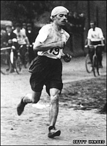

Saturday, January the 16th, 2010
back to: title, date or indexes
Nowadays, if I understand these things correctly, long distance runners rehydrate themselves by glugging lots of water during a race. Such namby-pamby methods were alien to the doughty amateurs who ran the twenty-six mile Marathon at the 1908 Olympic Games in London. Among their refreshments along the route were muscatel grapes, calves' foot jelly with lemon, new-laid eggs soaked in tea, orange segments, brandy, champagne, and small doses of strychnine.
So I learned from The First London Olympics 1908 by Rebecca Jenkins (2008)

Hooting Yard on the Air, February the 18th, 2010 : “A Man Of Letters” (starts around 26:22)